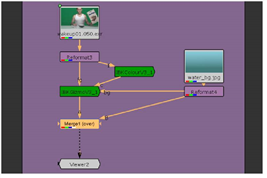

许多键控工具，如 Primatte，使用颜色选择作为哑光提取过程的基线，然后要求艺术家从该基线调整哑光。 核武器 的基于图像的键控器 (IBK) 使用合成图像的像素值，而不是颜色拾取，为要提取的图像生成最佳遮罩。它的工作原理是生成一个经过处理的屏幕图像，该图像保留了蓝色或绿色屏幕的颜色变化，并使用这种颜色而不是单一颜色来拉动钥匙。这通常会给出良好的结果，并在使用不均匀的蓝色或绿色屏幕时加快键控过程。
基于图像的键控需要两个节点 核武器 。首先，插入一个 IBKColour 节点来处理屏幕图像，该图像被预设为与绿屏或蓝屏一起使用。此节点生成处理后的屏幕图像，保留蓝色或绿色屏幕中的颜色变化。然后，插入一个 IBKGizmo 节点，使用处理后的屏幕图像、原始图像以及合成的背景图像生成遮罩。
| 1。 | 在 Keying_tutor.nk 项目文件中，找到标记为“ 基于图像的键控 ”。 |
| 2. | 单击鼠标右键, Reformat3 节点并选择 Keyer > IBKColour 。拖动 IBKColourV3_1 右边的节点。 |
| 3. | 单击节点图中的空白点以取消选择所有节点。然后，右击并选择 Keyer > IBKGizmo . |
| 4. | 从 IBKGizmoV3_01 节点，连接 Fg (前景) 到 Reformat3 节点。连接 c (彩色屏幕) 到 IBKColourV3_1 节点。 |
| 5. | 连接 Bg 从 IBKGizmoV3_1 到 Reformat4 节点，为 comp 提供背景。 |
| 6. | 将查看器连接到 IBKGizmoV3_1 节点，您的节点树应该类似于: |
| 7. | 打开的控制面板 IBKColourV3_1 并改变 屏幕类型 到 绿色 . |
| 8。 | 打开的控制面板 IBKGizmoV3_1 ,并改变其 屏幕类型 到 C-绿色 . |

您应该会在 50 帧上看到一个可接受的哑光，如下面的屏幕截图所示。
这是这个形象的一个很好的开始。
| 9. | 将查看器连接到 IBKColourV3_1 节点。您将看到经过处理的屏幕图像，它本质上是一个高斯过滤的高对比度密钥。 |

| 10. | 选择 合并 > 合并 (或按 M 在节点图形上) 插入 合并 (结束) 节点。 |

| 11。 | 连接 IBKGizmoV3_1 到 一个 的输入 合并 (结束) 节点。然后连接 B 输入到 Reformat4 节点。 |

这个绿色屏幕的颜色完全超出了可接受的行业标准的范围，但是 IBK 无论如何都做得很好, 通过平滑屏幕并使用结果基本上创建与前景不同的哑光。
提示: IBK 有绿色和蓝色屏幕的预设，但是你也可以在 IBKGizmo 节点中对任何屏幕颜色进行颜色选择。
如果你放大图像，你会看到受试者头发附近的小区域，那里的哑光被破坏了。

| 12. | 将查看器连接到 IBKColourV3_1 你会看到哑光边缘的彩色文物。 |

当你看到 IBKColour 制作的平滑屏幕时，你应该只看到屏幕颜色和黑色的值。
| 13。 | 在 IBKColourV3_1 控制面板，降低 黑暗 , g (绿色) 设置为 0.08 。(如果您正在键入蓝屏图像，则会降低 “黑色” 的 “b” 值。”)。 |

这修复了发际线的大部分问题，但破坏了图像下部的好键。
提示: Ibkcolor 图像中的文物显示为特定的色调: 浅绿色、深绿色、浅红色、深红色、浅蓝色和深蓝色。要删除这些，只需为要删除的工件调整适当的控件: 灯/g 、暗/g 、灯/r 、暗/r 、灯/b, 和黑暗/b。
| 14. | 在 IBKColourV3_1 ,提高 黑暗 , g 价值到 0.03 。然后改变 灯光 , g 价值到 0.75 。这将纠正屏幕图像的瑕疵。 |
| 15。 | 现在，改变 补丁黑色 设置为 1.5 恢复发际线的边缘细节。 |


| 16。 | 将查看器连接到 IBKGizmoV3_1 节点。新闻 一个 你会看到 IBK 系统产生的当前 alpha 通道。 |
显示的 alpha 图像对于 IBK 是正确的。如果 alpha 通道中的噪声强度大于上面显示的示例，您可能需要以非常小的增量调整 黑暗 和 光 IBKColour 节点中颜色通道的值。
| 17. | 新闻 一个 再次在查看器上切换回显示所有颜色通道，并在时间线上擦洗以检查剪辑中各点的遮罩。 |

| 18. | 如果您还没有这样做，请用新文件名保存您的项目，以保存您对项目所做的更改。 |
|
|